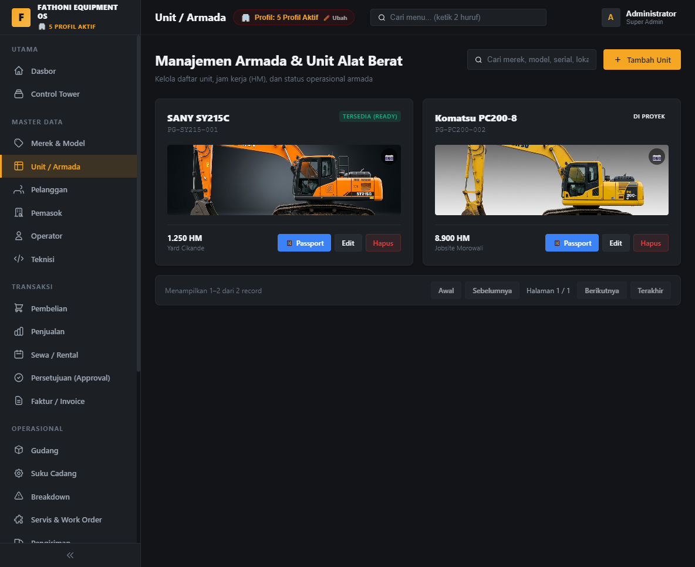
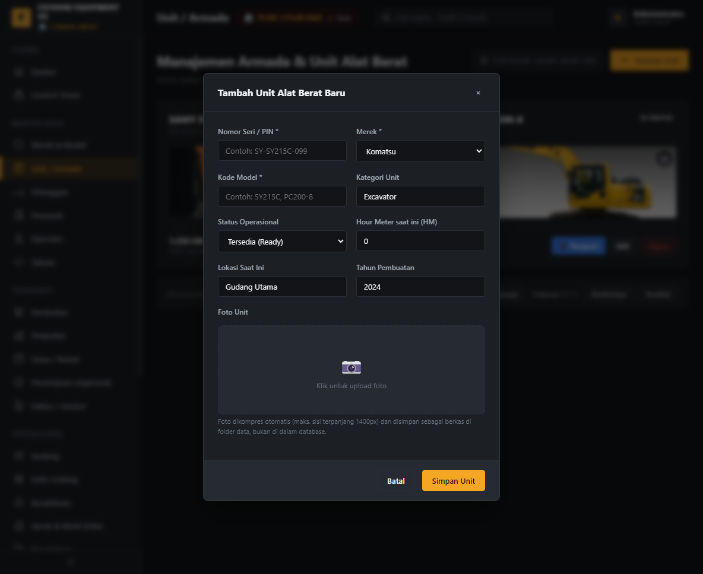

FATHONI EQUIPMENT OS 3.0.5 · Panduan Menu · 13 Oktober 2026
Panduan Menu — Unit / Armada
Kelompok sidebar
Master Data
Alamat
#/units (klik menu Unit / Armada di sidebar)
Peran yang melihat
Super Admin, Sales, Gudang, Teknisi
Mode bisnis
tidak disaring mode — selalu tampil selama peran memenuhi
Layar dipotret
1
Form dipotret
Tambah Unit Alat Berat Baru
1. Kegunaan menu ini
Daftar armada beserta nomor seri, hour meter, status operasional dan lokasi. Nomor seri di menu ini adalah kunci penghubung ke Penjualan, Rental, Servis, Breakdown dan Pengiriman.
2. Layar ketika dibuka
Unit / Armada ketika dibuka

unit-layar.png — 1184×967 piksel, 248 KB.
Judul di layar: Manajemen Armada & Unit Alat Berat
Subjudul: Kelola daftar unit, jam kerja (HM), dan status operasional armada
Bagian daftar layar ini memakai komponen kartu rancangan halaman itu sendiri (bukan tabel dengan judul kolom), sehingga isinya cukup dilihat pada gambar di atas.
Kolom yang ada di luar form (pencarian/pendaftar):
teks — Cari merek, model, serial, lokasi...
3. Form satu per satu, kolom demi kolom
Urutan kolom, nama label, tanda wajib, dan isi bawaan di bawah ini dibaca dari layar yang dipotret, bukan dari kode sumber. Tanda * adalah kolom yang memang ditahan kosong oleh aplikasi.
Form “Tambah Unit Alat Berat Baru”
Dibuka dengan menekan tombol Tambah Unit.

unit-tambah-unit.png — 1184×967 piksel, 175 KB.
Lebar jendela 500 px. Seluruh kolom muat tanpa menggulir pada jendela tinggi 980 px; pada jendela yang lebih pendek bagian bawah tetap perlu digulir.
Label di layar
Jenis kolom
Isi saat jendela baru dibuka
Pilihan dropdown / teks bantu
Nomor Seri / PIN *
teks
Contoh: SY-SY215C-099
-
Merek *
dropdown (2 pilihan)
Komatsu
Komatsu; SANY
Kode Model *
teks
Contoh: SY215C, PC200-8
-
Kategori Unit
teks
Excavator
-
Status Operasional
dropdown (10 pilihan)
AVAILABLE
Tersedia (Ready); Dipesan (Booking); Terjual; Dirental; Di Proyek; Dalam Pengiriman; Maintenance; Breakdown / Rusak; Tidak Aktif; Afkir / Disposed
Hour Meter saat ini (HM)
angka
0
-
Lokasi Saat Ini
teks
Gudang Utama
-
Tahun Pembuatan
teks
2024
-
Foto Unit
berkas (pilih file)
kosong
-
Wajib diisi: tidak ada kolom bertanda wajib pada form ini.
Tombol di kaki jendela: Batal · Simpan Unit
4. Setelah disimpan — efek ke menu lain
Yang terjadi di belakang layar
Status unit berubah otomatis dari menu lain: terjual menjadi SOLD (Penjualan), sewanya aktif menjadi RENTAL/RENTED (Sewa), work order "Sedang Berjalan" menjadi MAINTENANCE (Servis), laporan breakdown menjadi BREAKDOWN, dan servis selesai mengembalikan AVAILABLE sekaligus menaikkan Hour Meter.
Hanya unit berstatus AVAILABLE yang muncul di dropdown "Pilih Unit (AVAILABLE)" pada Penjualan dan Rental; Servis juga menerima ON_PROJECT.
Foto unit dikompres (sisi terpanjang 1400 px) dan disimpan sebagai berkas di folder data, bukan di dalam database.
Kartu detail menaut tab-nya ke nomor sasis unit ini: PERAWATAN menampilkan Work Order dan SEWA menampilkan kontrak rental dengan sasis yang sama, dibaca dari database (12 baris pertama, dengan penanda bila lebih). SUKU CADANG, GARANSI dan DOKUMEN menyatakan alasannya secara jujur karena skema belum menyimpan kunci penaut — tidak ada baris contoh.
Tombol pada kartu detail adalah navigasi nyata ke menu yang bersangkutan dengan unit sudah terisi (+ Catat Service Baru, Lihat Stok Suku Cadang, Catat Pemakaian Part, + Alokasikan Kontrak Baru, + Upload Dokumen, PASSPORT DIGITAL); tidak ada tombol yang hanya memunculkan kotak peringatan.
5. Perlu diketahui (apa adanya)
Batasan dan cacat yang terverifikasi di 3.0.5
Harga perolehan (purchasePrice) tidak pernah ditanyakan di jendela ini dan tidak bisa diubah dari layar; unit baru diisi Rp 1.750.000.000 dan angka itulah yang tampil di kartu unit, Equipment Passport, kolom "Nilai Perolehan" Laporan, serta menjadi pembagi biaya per jam di Dasbor (QA §4.20).
Karena kolomnya tidak ada, validasi `validateAmount(form.purchasePrice, 1 juta, 10 miliar)` tetap berjalan atas nilai yang tak terlihat: unit lama di luar rentang itu menolak tombol Simpan tanpa kolom yang bisa diperbaiki.
"Kode Model *" adalah teks bebas — harus persis sama dengan kode di menu Merek & Model supaya terhubung.